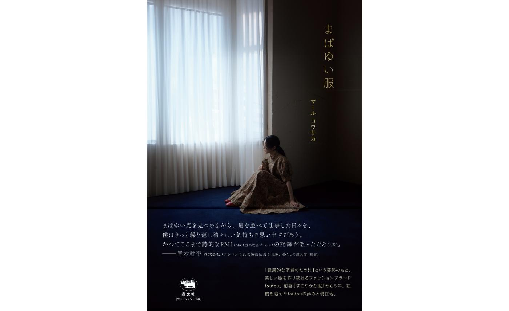
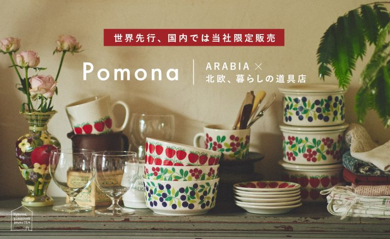
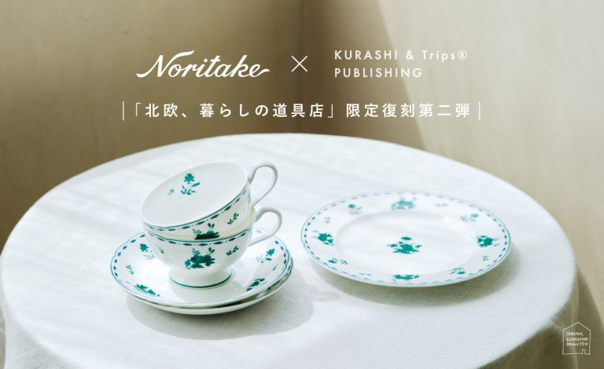
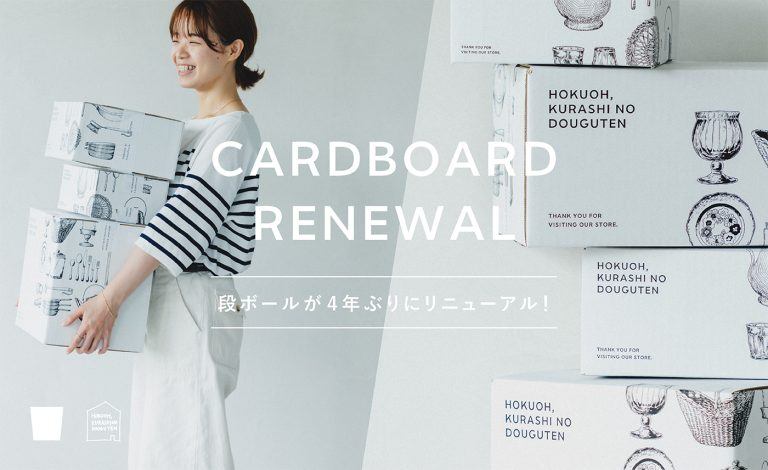
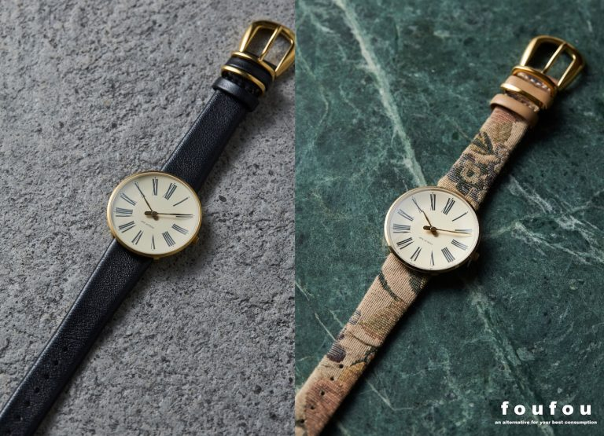

NEWS
最新情報

D2Cブランド「foufou」マール・コウサカ 5年ぶりの新刊『まばゆい服』11/12（水）発売、予約受付開始
プレリリース

「北欧、暮らしの道具店」×ARABIA、初のコラボレーション！Pomonaシリーズを復刻、世界先行発売
プレリリース
【日経クロストレンド】クラシコム×味の素、顧客コミュニケーションに意外な1つの共通項
掲載情報

「北欧、暮らしの道具店」創立120年を超える国内老舗ブランド「Noritake」とのコラボレーション第二弾。当店限定復刻のカップ&ソーサー、ケーキ皿を販売
プレリリース

「北欧、暮らしの道具店」段ボール等パッケージをリニューアル
プレリリース

D2Cブランド「foufou」、北欧デザインの巨匠「アルネ・ヤコブセン」とコラボウォッチ第2弾発売
プレリリース
ニュース一覧
BUSINESS
事業紹介
ライフカルチャープラットフォーム
北欧、暮らしの道具店
私たちはミッションである「フィットする暮らし、つくろう。」を果たしていくために、「北欧、暮らしの道具店」を運営しています。
「北欧、暮らしの道具店」は2007年にビンテージの北欧食器の専門ECサイトとして始まりましたが、現在では世界中のセレクト商品やオリジナル商品、web記事や、オリジナルのドキュメンタリーやドラマ、ポッドキャストや劇場映画までお届けするようになりました。
クラシコムの事業について詳しく